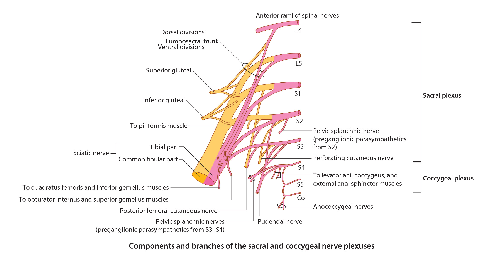
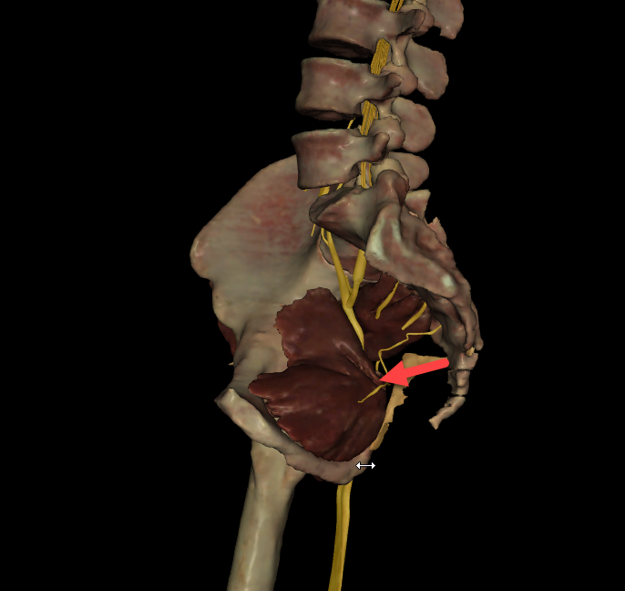

Lab 6 - Module 1 - The Gluteal Region: Page 4 of 8
Nerves of the Gluteal Region
|  |
| Tap on image to enlarge |
Where is the safest place for an intragluteal injection? |
|
|
The superolateral quadrant is a safe area for intragluteal injection. 
|
|
Clinical Pathology:Sciatic Nerve:A great deal of variability exists in relationship of the sciatic nerve to the piriformis muscle and short external rotators. In approximately 85% of cases the sciatic nerve exits the pelvis deep to the muscle belly of the piriformis. It is usually superficial (posterior to the other external rotators). In 11% of individuals a portion of the piriformis muscle splits the common fibular (peroneal) nerve and tibial nerve. Piriformis Syndrome:Youngman described ‘Piriformis Syndrome’ in 1928 as an evolving compression of the sciatic nerve by the piriformis muscle. This is associated with acute trauma to the buttock and occurs when the sciatic nerve exits posterior to the piriformis. The patient finds sitting difficult and participation in activities where hip flexion or internal rotation is required, almost impossible. The pain is in the sciatic nerve distribution. Physical examination reveals tenderness directly over the piriformis tendon or in the gluteal area, and the pain can be elicited by forced internal rotation of the extended thigh – this is sometimes called ‘Pace’s sign’. There is sometimes weak abduction against resistance or external rotation against resistance, and the pain may also be reproduced by rectal or vaginal examination. Treatment involves rest and oral anti-inflammatory drugs. The diagnosis can also be confirmed by the injection of local anesthetic under fluoroscopy into the area of injury. Steroid injection may occasionally be necessary. In refractory cases, surgical exploration of the piriformis and/or division of the piriformis muscle and/or mobilization of the sciatic nerve may be necessary. The piriformis syndrome is thought to be due to irritation of the sciatic nerve as it passes over the piriformis tendon. This causes buttock pain and sciatica. The pain can be reproduced by applying pressure to the piriformis fossa on the posterior aspect of the greater trochanter and by stressing the piriformis muscle. Injections can once again be diagnostic and therapeutic. Some authors have reported good results by sectioning the piriformis to relieve the pain. |
| Add the Inferior Gluteal Nerve. (L5, S1, S2) – exits the greater sciatic foramen inferior to the piriformis to innervate the gluteus maximus muscle. |
The sacrospinous ligament is not identified in this cadaver. Can you identify where this ligament should be located? |
|
|
You should now be able to identify the lesser sciatic foramen.  |
|